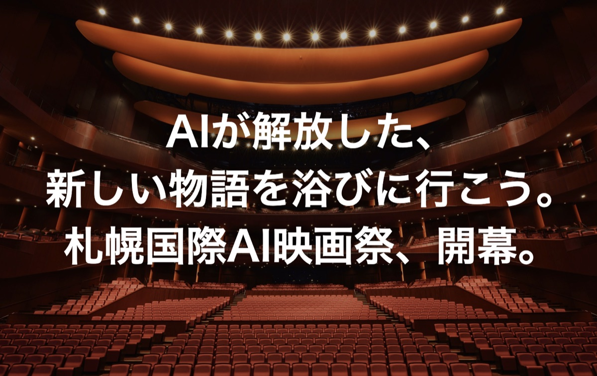
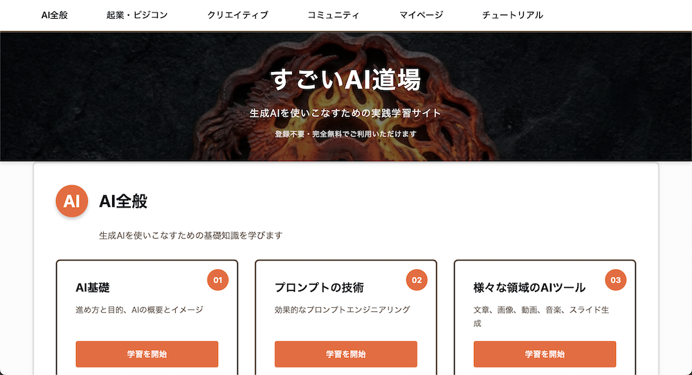
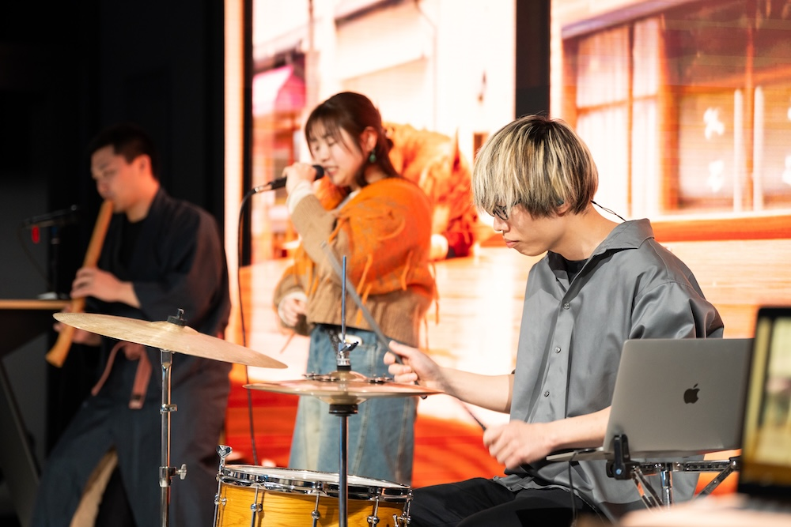
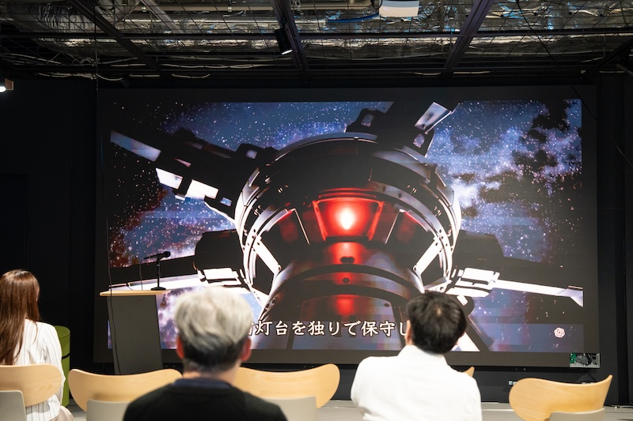
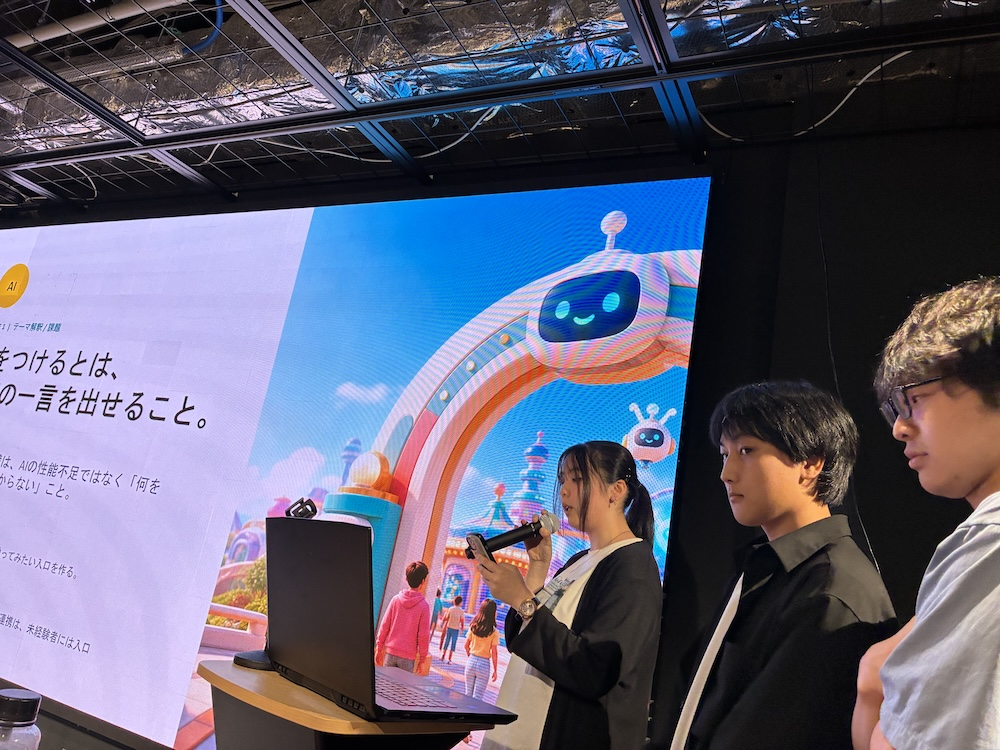

30+
イベント開催数
新聞 4 / TV 1
メディア掲載
300+
Discord会員
5
大学・高校等講義
01 Community & Events コミュニティ・イベント
| 年 | 種別 | 名称 | 概要 | 実績 | リンク |
|---|---|---|---|---|---|
| 2025~ | 発足・主催 | 札幌すごいAI会 | AIの面白さを共有するコミュニティ | イベント30件 / Discord 300名 / connpass 400名 | connpass |
| 2026 | 主催 | 札幌すごいAIまつり | 市民がAIを学び、つくり、発表する参加型イベント | 来場者100名 / 発表者12名 / 展示8名 / 協力企業3社 | 公式サイト 2026冬 新聞掲載 |
| 2026 | 主催 | 札幌すごいAI映画祭 | 札幌現地で全員上映をコンセプトにした、クリエイターのためのAI映画祭 | 2026年 春・夏 開催 / 冬 開催予定 | 2026春 2026夏 2026冬 |
| 2026 | 主催 | 札幌すごいAIハッカソン | 2時間で世界を作れ。AI駆動開発を中核としたハッカソン | 2026年 春・夏 開催 / 冬 開催予定 | 2026春 2026夏 2026冬 |
| 2027 | 主催 | 札幌国際AI映画祭 | 世界中のクリエイターからAI映画を公募し、札幌の劇場で一日かけて上映する国際映画祭 | 2027年5月 開催予定 | 公式サイト |
| 2025~ | 主催・共催 | 会社合同イベント | 企業と連携したAIイベントの企画・運営 | 4件 | 札幌技術交流会 |
02 Education / Academia 大学・学校・研修
大学
| 日付 | 種別 | 機関・学部 | 授業名 | 内容 | 対象 | 人数 | 形式 | 参考リンク |
|---|---|---|---|---|---|---|---|---|
| 2026年7月10日 | 学会発表 | 北方森林学会 （北海道大学農学部森林科学科主催） |
2026年度 北方森林学会 春季行事 | 動画生成AIの活用可能性 | 大学講師・林業系会社員 | 30名 | 現地講義・実演 | 写真 開催案内 |
| 2025年6月17日 | 大学講義 | 北海道大学 経済学部 |
経済学特別講義 | 生成AI活用講義 | 大学2〜3年生 | 30名 | 現地講義 | 配布用プロンプト 写真 |
| 2025年6月3日 | 大学講義 | 北海道大学 工学部 |
情報エレクトロニクス特別演習 | アジャイル体験 | 大学1〜3年生 | 43名 | 現地講義 ワークショップ |
- |
| 2025年5月9日 | 大学講義 | 小樽商科大学 商学部 |
システム戦略論 | 実践AI Agent | 大学1〜2年生 | 30名 | オンライン講義 | - |
その他教育機関、研修
| 日付 | 種別 | 機関・学部 | 授業名 | 内容 | 対象 | 人数 | 形式 | 参考リンク |
|---|---|---|---|---|---|---|---|---|
| 2026年7月1日 | 高校講義 | 北海道小樽水産高等学校 情報通信科 VR研究班 |
Deep Tech Core Sapporo施設見学・AI体験 | AIアニメ鑑賞・AI音楽生成・プロンプト生成講座 | 高校1〜2年生・教員 | 3名 | 現地体験授業 | note記事 |
| 2026年3月10日 | 高校講義 | 北海道立阿寒高等学校 | AI活用授業（情報学１、情報処理） | AIサムライ道場〜今日から君もチート武器使い〜 | 高校1〜2年生（全校生徒） | 31名 | 現地講義 | Zenn記事 釧路新聞 写真 |
| 2026年2月17日 | 研修 | 北海道立阿寒高等学校 | 令和7年度 第4回校内研修 | 先生の授業スタイルを活かしながらAIで生徒の反応を最大化する方法 | 高校教員 | 14名 | オンライン講義 | Zenn記事 |
| 2025年2月19日 | ワークショップ | 技育CAMPアカデミア | 生成AIで今日からキミも〇〇〇！ | 次世代システム運用保守 | 大学1〜4年生 | 34名 | オンライン講義 | イベントページ |
03 Platforms & Products プラットフォーム・制作物

札幌国際AI映画祭
AIが解放した物語を、劇場で浴びる1日。世界から集まるAI映画を札幌のスクリーンで。
View Festival →
すごいAI道場
無料で学べるAI e-learning。登録不要で今すぐ始められる。
Learn AI →
札幌すごいAIまつり
市民がAIを学び、つくり、発表する。札幌発の参加型総合AIフェス。
View Event →
定期イベント・勉強会
AIの面白さを共有するコミュニティ。月次イベントを定期開催。
View Events →
札幌すごいAI映画祭
札幌現地で全員上映をコンセプトにした、クリエイターのためのAI映画祭。
View Event →
札幌すごいAIハッカソン
2時間で世界を作れ。AI駆動開発を中核としたハッカソン。
View Event →04 Media メディア掲載
| 日付 | メディア | タイトル | 参考リンク |
|---|---|---|---|
| 2026年7月8日 | 北海道小樽水産高等学校公式note | 施設見学”Deep Tech Core Sapporo”様にお邪魔しました！ | リンク |
| 2026年4月4日 | 釧路新聞 | チャットＧＰＴで画像制作 阿寒高、講師招きＡＩ活用授業【釧路市】 | リンク |
| 2026年4月1日 | 侍エンジニア | 北海道の生成AIイベントおすすめ6選【口コミから厳選】 | リンク |
| 2026年3月7日 | J:COM | "ジモトのイチバン"を生中継！「ジモトピLIVE 」【札幌のデジタル技術の未来がココにある!?】 | リンク |
| 2026年2月16日 | 北海道新聞 | 人とAI、音楽で融合 札幌でまつり | リンク |
| 2026年2月10日 | 北海道新聞 | AI愛好者の交流会を設立した 岸本悠佑（きしもと・ゆうすけ）さん | リンク |
| 2026年2月2日 | 北海道新聞 | 札幌の有志がAIイベント 15日初開催 子どもも楽しめる展示も | リンク |
05 Timeline 年表・時系列
| 年月 | 出来事 | 詳細 |
|---|---|---|
| 2027.5 | 札幌国際AI映画祭 開催予定 | 世界中のクリエイターからAI映画を公募し、札幌の劇場で一日かけて上映する国際映画祭 |
| 2026.12 | 札幌すごいAIまつり2026冬 開催予定 | 札幌すごいAI映画祭・札幌すごいAIハッカソン・LT会を同日開催する冬の祭典 |
| 2026.11 | Discordコミュニティ拡大 | 300名突破 |
| 2026.8 | 札幌すごいAIまつり2026夏 開催 | 札幌すごいAI映画祭・札幌すごいAIハッカソン・LT会を同日開催 |
| 2026.6 | 札幌すごいAIまつり2026春 開催 | 札幌すごいAI映画祭・札幌すごいAIハッカソンを同日開催 |
| 2026.5 | Discordコミュニティ拡大 | 200名超に成長 |
| 2026.2 | Discordコミュニティ拡大 | 150名超に成長 |
| 2026.2 | 札幌すごいAIまつり 初開催 | 市民発の、AIを学び、挑み、楽しむAIの総合フェス |
| 2025.12 | すごいAI道場 公開 | 無料・登録不要で誰でもAI活用を学習できるウェブサイト |
| 2025.12 | Discordコミュニティ運営開始 | 1ヶ月で104名超のオンラインコミュニティに成長 |
| 2025.3 | 札幌すごいAI会 発足 | 「AIってすごい、を体感し、分かち合う。」をコンセプトとした市民団体 |